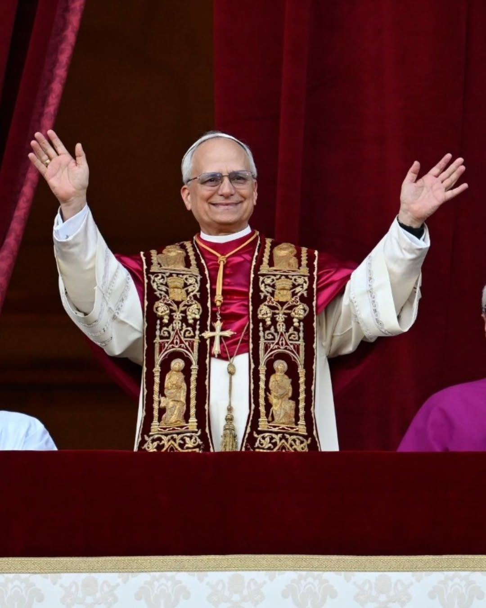

Meu primeiro post
Por: Carlos Sell
Site onde você pode tirar suas duvidas sobre a liturgia.

Por: Carlos Sell
Site onde você pode tirar suas duvidas sobre a liturgia.

Por: Marcelo Paludetto
Boas-vindas ao meu novo blog! Aqui vou compartilhar dicas de programação e curiosidades da área de tecnologia.